你可能处在临界状态而看不到边界在哪里。但数学和美食学都有可以引领你直接找到边界的方法。最简单的就是普遍化。我们常常因为成功获得某个事物而取得进步，并且会继续推动看看这个事物是否还会更进一步。有时的确会更进一步。
通用生面团
当我最终确定自己的面包食谱时（见第二章），我在哪都想用一用。我已经用它成功做出了比萨。但是其后我想看看它是否适合一切要用到发酵生面团的食谱——甜面包、百吉饼、英式松饼等。我发现它的适用度很惊人，这就意味着我的生面团可以做两块面包、烤一条面包，可以将剩下的生面团放到冰箱里为不同的场合做准备。
这里有些非常成功的生面团用法。
甜面包
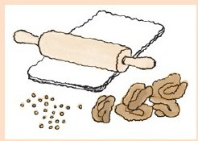
½个食谱中提及的生面团（相当于一条烤面包的量）
5～8汤匙无盐黄油
胡桃
杯糖
少量糖浆
葡萄干（我喜欢金黄葡萄干）
用黄油将烤盘润滑。我更喜欢用面积至少75平方英寸，盘边高2英寸的烤盘。我曾经用过一个8英寸×8英寸的烤盘，黄油总是溢出盘边，在烤箱底部燃烧起来。这使小面包有一种与众不同的味道。用了几年后我换了一个更大的烤盘。
在烤盘底部点上两三汤匙的黄油。烤盘里撒上胡桃，量多量少依个人喜好。烤盘里撒上杯糖。在糖上滴上少许糖浆（1～2茶匙）。
将生面团铺开成一个大矩形。
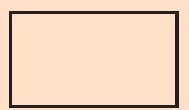
把剩下的黄油点在上面，撒上剩下的糖，滴上稍多的糖浆，再撒上葡萄干（依个人喜好定量）。
从较长一边开始将生面卷起来。
将面卷切成16份，切面朝上（或朝下）放在烤盘中。
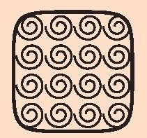
让小面包静置醒发，直到略为疏松。之后将烤箱调到230摄氏度，烤25～30分钟[28]。
说明：
·你可以避免出现夹生的问题，按下中间部分，如果像海绵一样松软有弹性，那应该再烤久一些。
·你也可以避免烤焦。如果你用的是玻璃烤盘，看看盘底即可。
·但是我的经验是不管材质是什么都好。有时我会把它烤焦。这样很好。有时我太快把它拿出来中间还有点滑腻，这样也很好！
·这些小面包不像商店里卖的那么甜，也不会太油腻。这样很好——努力吃几个你会觉得又赚了几个。
·你可以使用不同的坚果和水果。杏仁（切碎）和干樱桃是种可爱的搭配。在铺开生面前，撒上¼茶匙杏仁汁。
·另一种极好的搭配是碎榛子和杏脯。
法式长棍面包
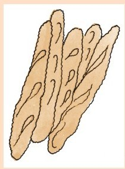
按食谱准备一份生面团。
黄油
燕麦片
只需做一个又细又长的烤面包。你可以在大型烹饪板上烤。在板上涂黄油润滑，撒上燕麦片。我将一条面包分成3～4根长棍面包，从1英尺拉伸到20英寸。
以230摄氏度进行烤制，直到你觉得烤熟了（20～30分钟）。
在宴会上，我为每位客人做了一条烤面包。
最近我买了一些长形烤盘，每一个都可以烤2根长棍面包。它们的横截面像这样：
我把它们弄弯了，现在成了这样：
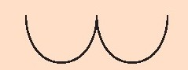
我发现我不必对这些烤盘进行润滑。面包烤好时，它也很容易滑出来。
皮塔饼
（大概8个皮塔饼的量）
食谱中生面团的½
1个煤气灶
用煎饼用的浅锅或者长柄平底锅，以极高的温度加热。将生面团分成8块。在撒上面粉的面板上，将每块生面团擀成面饼，厚度约为英寸。锅热时，调到中火加热，放上一片生面饼。当你看到表面出现气泡（一两分钟后），轻拍圆面饼。
当圆面饼略微变硬时（边缘翘起的时候不需要过多拍打），翻面，将锅移走，将圆面饼直接放到燃烧的火焰上。它很快会膨胀起来，我不会让面饼在某一点膨胀过快（这会使面饼破裂）。当膨胀的部分略微烧焦，翻面，直到另一面成烧焦的棕色。我更喜欢两边都略微烧焦（不是所有人都喜欢这样）。
把圆面饼放在烤架上冷却。冷却的圆面饼可以切成两半，每一半都可以展开形成一个口袋。这些最好在半小时内吃完。
说明：
·它们不会每次都膨胀。原因可能有很多。别放弃尝试。皮塔饼即使没有膨胀也能打开形成口袋。这需要花很多工夫，但是很好吃。
·我曾经在电炉上试过，不行。但是可能有人比我聪明会成功的。
有些应用并不太好[29]。做百吉饼还可以，半圆烤乳酪馅饼不错。做英式松饼也不错，但是味道不同寻常。果馅卷没做成，但是做椒盐脆饼干非常好。这还有一个：
中式肉馅小面包
½个食谱中所说的生面团
美味可口的馅料
黄油
蜡纸
将生面团分成8～10份。将每一份擀成饼，中间放上一些可口的馅料。用生面饼将馅料包起来，封口。传统的做法到这一步会通过捏住顶部封口就结束准备工作。将各个小圆包放在一片涂了奶油的方形蜡纸上。
在蒸锅中蒸大约20分钟。
关于馅料可以查阅中国烹饪书籍，叉烧肉是传统做法。手撕猪肉加上烤肉调味酱味道很棒。菲律宾阿道包也很好。在菲律宾，这种包子叫siopao。注意，要从食谱中选择一种汤汁不太多的馅料。
盒子
把烤面包用的生面团放在一边，我们要去推挤矩形。
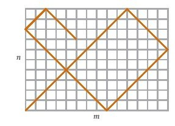
你可能会想起第六章结尾的那个梦。它是由数学理论与反弹点的形状与图形（比如矩形）相连接组成的，含糊不清。
我将梦境变成现实的首次尝试是观察L形区域。
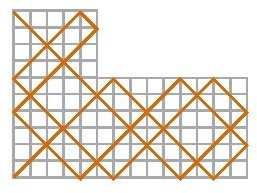
情况很快变得非常复杂，因此我将其暂时搁置。
我转向了不同的研究方向，思考变得立体。我思考的是一个在盒子中反弹的点。
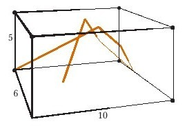
这下变得特别容易。答案本质上与矩形的一样。在矩形里，反弹的点沿着更偶数化（2是最多的因数）的那一边终止。在前文中提及的盒子中，6和10都是偶数，并且比5更偶数化，因此，你会在两边相交的一角终止反弹。
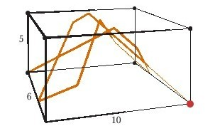
这只是关乎维度均匀性的问题。
出于好奇心，我想知道如果不在盒子内部四处反弹而是在盒子外边像包装带那样缠绕会怎样。我们先沿着盒子底部开始说明。
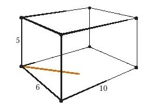
当你触碰到边缘，你只会弯曲，绕着一侧向上，保持相同的角度（45度）。
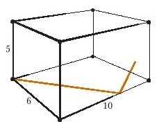
在每一边缠绕，直到某些事情发生。
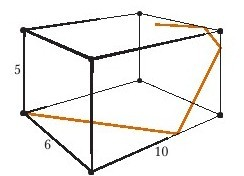
在这个盒子里，有一个惊喜：你会在起点终止。
我发现这些盒子至少和L形状一样，都很狡猾，但是它们令我着迷。与矩形一样，如果盒子的外形尺寸是整数，你可以证明所有的路径在矩形的一角终止。原因是相同的，路径总是会穿过交叉点。
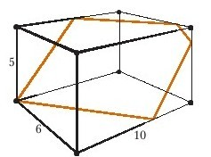
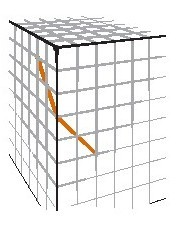
并且只能穿过相同的交叉点两次。
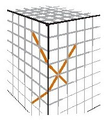
所以，这条路不会永远走下去。最终它会在一角终止。
但是在哪一角终止呢？
这是个谜题！它当然取决于盒子的边长，但是边长如何决定是哪一角呢？与均匀性确实有关系，但是并不那么简单。看看这些，作为范例。
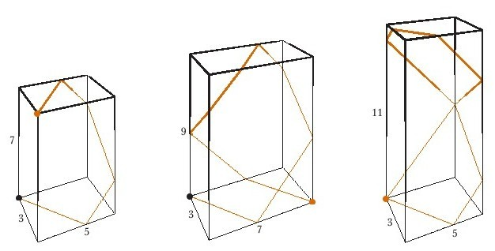
所有的尺寸都是奇数，但是每个盒子都有一个不同的终止点！
我一直和我的儿子弗莱德一起研究这个问题。我们已经取得重大进展。我们的一部分研究在网站上可以看到，在接下来这一章我会介绍更多内容。